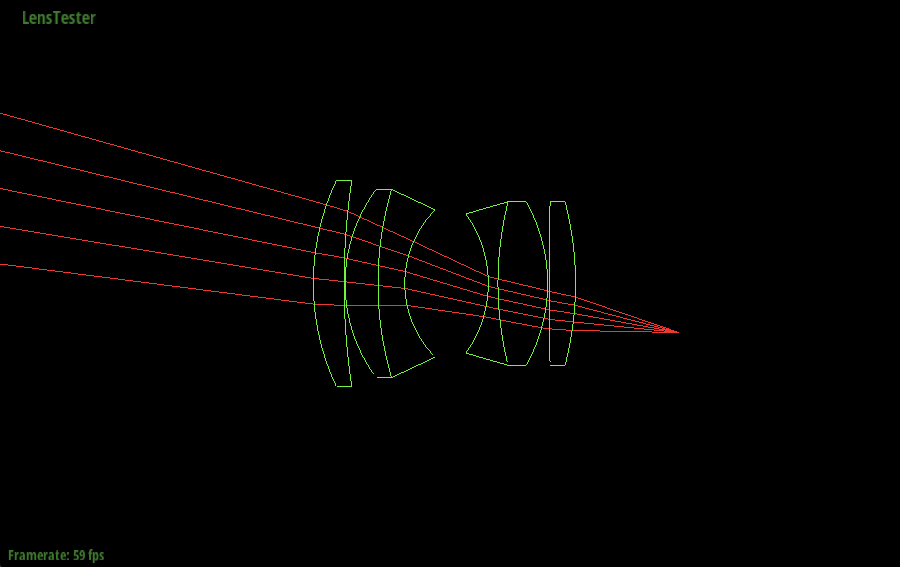
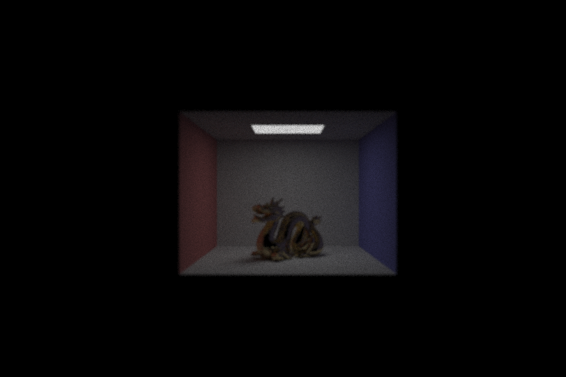

Amy Doo, Jordan Bell, Katlyn Ho, Su Latt Phone
Link to Slides Link to VideoOur project idea is to add functionality to the ray tracing engine that will allow it to render images as if the camera lens was composed of physical lenses rather than an approximation of lenses, while also being able to have the set of lenses used be based on user input. Additionally, we plan to add additional features that a real camera has, such as auto and pre-defined focus, flash, and auto brightness. We are basing our project off of an old CS184 project 3-2 specification.
The first step in getting our project working was to interface our project 3-2 code with the code that was provided from the older Lens Simulator spec. There were a number of small differences that all had to be caught and rectified in order to get the project functionally building. The largest difference was that the older spec used a Spectrum object to represent colors rather than a Vector3D, meaning we had to change our implementation to work with the new struct. We also needed to reuse the functions for intersection and lighting estimation and make sure they were being called correctly by the skeleton. This step was mostly successful, as the application builds on Mac computers and functions normally, but it currently does not on Windows machines.
A debugging tool to check our refraction methods was implemented. This involved writing LensElement functions pass_through, intersect, and refract to handle the interaction between a ray and a lens element. Then, they could be used to write the trace and trace_backwards functions in order to simulate a ray going forwards or backwards through the whole lens system. A simple image is included below:
Lens and LensCamera helper functions were implemented to help out with setting focus parameters, focus depth, sampling back lens and generating a ray from sensor position and trace through the lens. The set_focus_params method calculates infinity focus, near focus, and focal length based on the thick lens approximation. The implementation of the focus_depth method now allows for the user to blur or sharpen the rendered image. The function back_lens_sampling involves sampling a point uniformly from the circle on the back of the lens element that is the nearest to the sensor. The function generate_ray involves generating a ray with its origin as the sensor position and its direction is set as the direction from the sensor position towards the point sampled at the back of the lens element that is nearest to the sensor - using the back_lens_sample function. Then, this ray is traced through the lens and if it makes it through the lens, the ray is converted into world space, otherwise, a ray that won’t hit anything is returned. An example of a fully traced and rendered image is below with Lens 2:
Our goal was to have the multi-lense system implemented by the milestone deadline and rending good images. We’ve mostly hit that goal, with only a bug that’s making our images darker than they should be left to fix. We can fix it before the end of this week and then we will be back on track for starting the implementation of auto focus this week, as well as the smaller workload tasks that we would like to implement such as flash and adding brightness to the image.